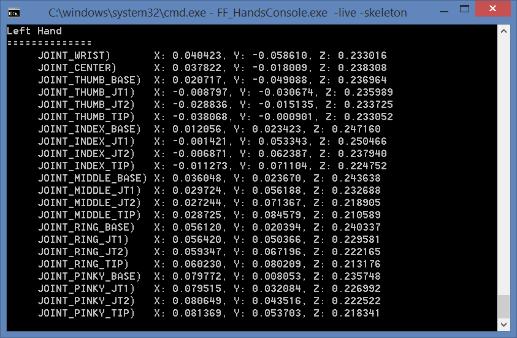

Sample: hands_viewer_cmd |
Top |
|
Introduction The hands_viewer_cmd sample is a C++ console application that demonstrates the SDK hand tracking feature. This application demonstrates, among other, the tracked hand skeleton (joints and bones), the segmentation mask (separating hand from background) and the gesture recognition mechanism. Launch The applications can be launched directly from the bin folder of the SDK installation, or compiled and executed using Microsoft Visual Studio. The project and source files are located inside the sample/hands_viewer_cmd folder. Launch the sample executable under a command window. The sample output is similar to Figure 167.  Figure 167: Sample hands_viewer_cmd Console Window. Command Options Run the sample executable without any command line options shows the help message. The sample uses the following command line options:
|